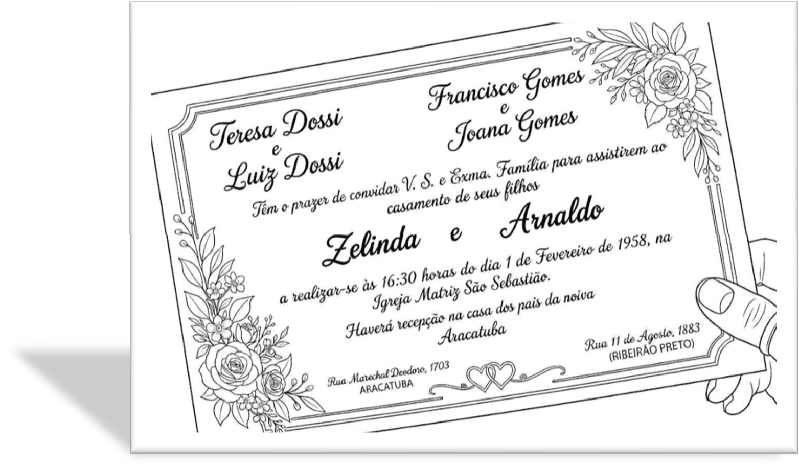
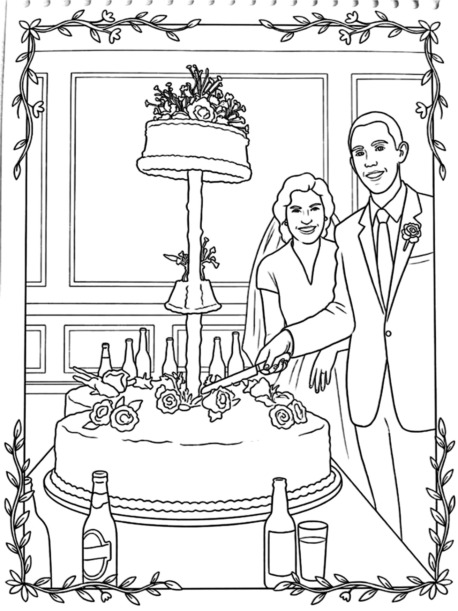

O Doce Ofício da Noiva: O Casamento de Zelinda e José Arnaldo
O casamento de Zelinda e José Arnaldo — Araçatuba, 1958
Na véspera do casamento, a casa de Araçatuba tinha o movimento das grandes ocasiões. Gente, entrando e saindo, coisas por organizar, recados cruzando os cômodos. E, no centro de tudo, havia uma noiva que não estava diante do espelho. Estava na cozinha.
No dia seguinte, Zelinda se casaria com José Arnaldo Gomes, o homem alto, de olhos azuis, que ela escolhera para dividir a vida. Muita coisa podia ficar nas mãos dos outros. O bolo, não. Esse ela faria com as próprias mãos, porque a cozinha nunca foi apenas o lugar onde trabalhava. Era o lugar onde sabia exatamente o que fazer.
Começou cedo. O bolo precisava ser grande o bastante para a família e para a vizinhança, e as formas da casa não davam conta da encomenda. A solução veio do próprio armazém: grandes latas de goiabada, lavadas e preparadas uma a uma, viraram formas para o pão de ló. Naquele tempo, quando faltava utensílio, não faltava engenho.
Bateu a massa com atenção, reconhecendo o ponto pelo olhar e pelo toque, sem medida que ensinasse o que a experiência já sabia. No fogo, o doce de leite cozinhava devagar, engrossando até ficar espesso e cremoso. O perfume escapou da cozinha, tomou a casa e avisou a todos que a festa
já tinha começado, embora ainda faltasse uma noite inteira para a cerimônia.
O forno era a lenha. Não havia visor, nem termômetro, nem nada que decidisse por ela. Zelinda observava o calor, escutava a lenha estalar e conhecia o temperamento daquele forno como se conhece uma pessoa da família. Esperou o momento certo. E o pão de ló saiu como precisava sair: dourado e leve.
Depois de frios, os bolos foram montados com cuidado, em dois andares, recheados com o doce de leite. Para enfeitar, casquinhas de sorvete viraram sinos, e flores de biscuit, feitas à mão, pétala por pétala, foram tomando seu lugar. Não era só enfeite. Era a assinatura de quem queria uma festa com beleza, com fartura e com um pouco de si.
E, como se ainda fosse pouco, a noiva fez também os brigadeiros, como se a festa precisasse levar mais um pedaço de suas mãos.
Quando colocou a última flor, Zelinda pôde, enfim, olhar o bolo inteiro. Estava cansada. Estava satisfeita. No dia seguinte, começaria a vida ao lado de José Arnaldo. E aquele bolo, nascido de improviso e paciência, ficaria como a lembrança concreta desse começo: antes de chegar à mesa, o afeto já tinha passado por suas mãos.
*
Na festa, cada coisa encontrou seu lugar. O bolo, com sua altura e seus sinos, chamava os olhos. Os brigadeiros chamavam a gula, essa forma tão sincera de felicidade que dispensa explicação. Os convidados encontraram tudo pronto, sem imaginar as horas que cabiam em cada fatia.
A festa não precisou de luxo para ser lembrada. Tinha trabalho, criatividade e o cuidado de quem queria receber bem. Nada estava naquela mesa por acaso: cada doce carregava um pouco do tempo de quem o fizera.
Enquanto os convidados provavam o bolo, Zelinda talvez ainda não soubesse que certas lembranças resistem melhor do que as fotografias. A fotografia guarda o vestido, o bolo, os rostos reunidos. A memória guarda o resto: o cheiro do doce de leite, o calor do forno a lenha, o movimento das mãos que trabalharam enquanto a casa se preparava para a festa.
O casamento passou. Os doces acabaram, como os doces sempre acabam. Mas a história daquela mesa continuou a ser contada.
Porque algumas obras-primas não vão para os museus. Ficam na lembrança de uma família, no sabor que alguém ainda consegue recordar e na certeza de que, naquele dia, Zelinda pôs muito mais do que açúcar e chocolate em cada receita. Pôs o seu jeito de amar.
Aquele foi o primeiro bolo da nova casa. Muitos outros viriam. E, com eles, as histórias que estas páginas guardam.
.

